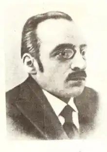

1884 — 1937
Рудницький Юрій Львович (Юліан Опільський)
(8 грудня 1884 — 9 лютого 1937) Письменник, романіст Народився у Тернополі 8 грудня 1884 р. в сім’ї вчителя. Енциклопедії подають як дату його народження 8 грудня, але насправді він народився 8 жовтня. Коли Юрієві виповнилося 7 років, сім’я переїхала до Львова, де батько продовжував учителювати, а син навчався спершу в польській, а потім в українській гімназії. У 1898 р. Юрій залишився круглим сиротою. Допомагала здібному учневі шкільна рада, опікувалася ним старша сестра. Гімназію Ю. Рудницький закінчив у 1902 р. Чотири семестри студіював філософію і класичну філологію у Львівському університеті. У студентські роки Рудницький подорожував по Італії, Греції, Єгипті. Живі враження накладалися на багаті знання — все знадобилося згодом, коли писав історичну прозу, а поки що віршував українською і німецькою. 1907 р. Ю. Рудницький закінчив університет і повернувся до рідної гімназії у Львові, в якій викладав німецьку мову й історію. Звісно, у віршових спробах молодого філолога було ще мало оригінального, але вони допомогли йому, зрештою, збагнути вагу слова, його предметну спрямованість. Невдовзі розпочалася Перша світова війна, під час якої Ю. Рудницький перебував на селі у Карпатах. Не полишав він тоді праці як письменник, педагог. Львівська "Просвіта" в 1916 р. випустила його "Підручник до науки німецької мови". 1918 р. вийшов у світ історичний твір "Іду на вас". Під заголовком із жанровим означенням "Історичне оповідання з часів Святослава (960 — 972)" стояли нікому невідомі доти ім’я та прізвище — Юліан Опільський. Так заявив про себе новий письменник: Юрій Рудницький у житті, Юліан Опільський — у літературі. Літературне ім’я Юрій Львович взяв від назви рідного краю — Опілля. 20-ті роки — час остаточного самовизначення письменника, період найінтенсивнішої праці. Ю. Опільський став прозаїком, вірним історичній тематиці. У роки Першої світової війни письменник створив трилогію під назвою "Опирі" ("Упирі"). Це — найбільший твір Ю. Опільського, перша частина якого — "В царстві золотої свободи" побачила світ 1920 р. Друга і третя частини "Івашко" та "Чорним шляхом" опубліковані лише у наші дні в журналі "Тернопіль". У трилогії змальовано татаро-турецькі напади на українські землі, сваволю польської шляхти як ненаситних і підступних упирів. Мотиви визволення проти поневолювачів ще виразніше зазвучали в романі "Сумерк", який вийшов у 1922 р. Дія твору відбувається на західноукраїнських землях на початку 30-х років XV ст., коли знову загострилася боротьба між місцевим боярством, литовськими і польськими феодалами, які прагнули утвердити своє панування на Волині та Поділлі. Логічним продовженням повісті "Іду на вас" стала повість "Ідоли падуть" (1927). У ній письменник показав усвідомлення нових принципів державної політики, продиктованих проблемами часу. Ідейний стержень твору — обґрунтування прийняття християнства на Русі. Ідея народу як рушійної сили суспільства пронизує всі твори Юліана Опільського. Вона розкрита і в повістях "Вовкулака" (1922) та "Золотий Лев" (1926), дія яких відбувається на західних рубежах давньоруської держави. Юліан Опільський не тільки створив своєрідну панораму вітчизняної історії. Його цікавило також минуле інших народів, що відбилося в його повістях "Танечниця з Пібасту", "Поцілунок Іштари", "Під орлами Роми", "Діти Одина". Кожен з цих творів має цікаву сюжетну інтригу і читається з неослабним інтересом. Автор ставив перед собою мету розповісти не про певний історичний епізод, а передусім ознайомити із побутом і звичаями, віруваннями жителів стародавнього Єгипту, Вавилона, Рима та підвладних їм племен. Юліан Опільський помер 9 лютого 1937 р. у м. Львові, де й похований на Личаківському цвинтарі. Провідними ідеями, які об’єднують тематично розмаїту історичну прозу Ю. Опільського, є прагнення до правди і справедливості, повага до людини, засудження гноблення. Найбільшу цінність історичної прози письменник вбачав в тому, що "вона в’яже віддалені від нас часи з теперішнім вічним, незмінним, загальнолюдським підкладом. Через те ілюструє вона минувшину, допомагає не раз визначатися у безладді і дає науку на майбутнє". Історичні повісті Ю. Опільського містять у собі саме такий "загальнолюдський підклад", який у наш час набуває особливо актуального значення. Вони сповнені гуманістичного змісту, що має велике загальнолюдське значення.